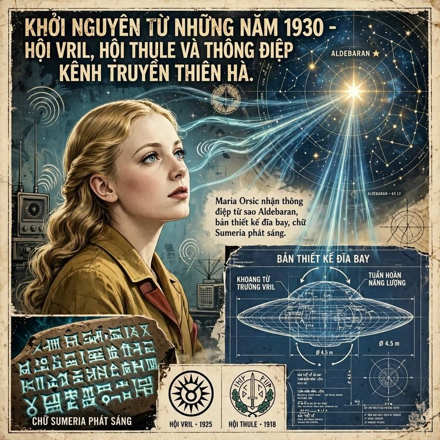
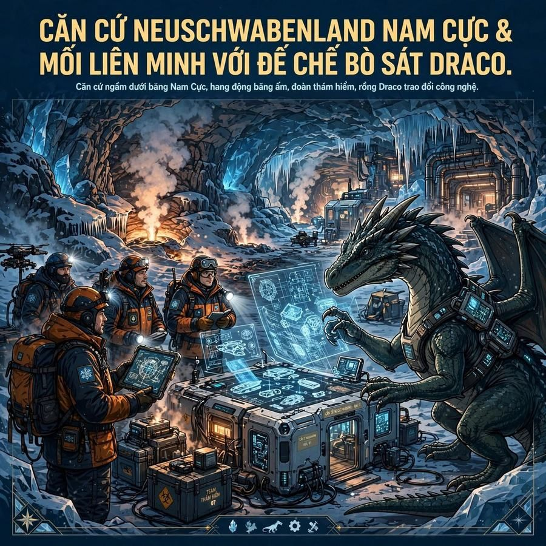
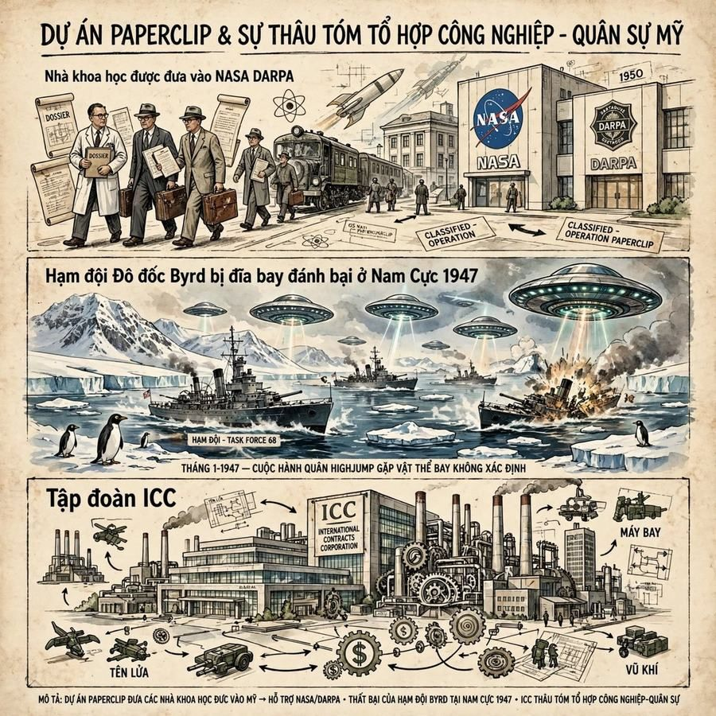
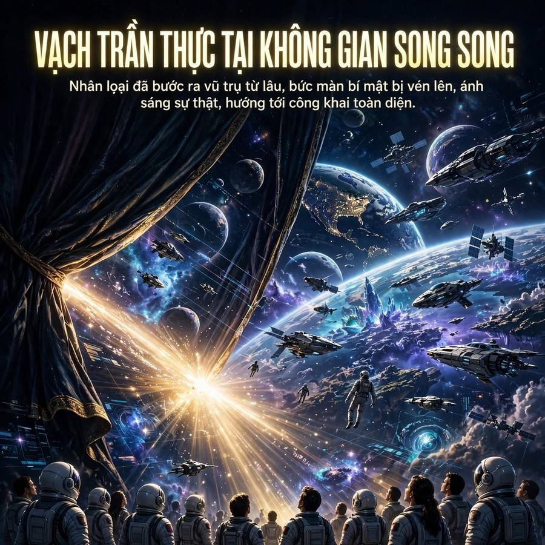

Trang chủ / Chuyên đề 5: Chương Trình Không Gian Bí Mật / Kỳ 41
Chuyên đề 5 · Kỳ 41 / 100
NGUỒN GỐC LỊCH SỬ CỦA CÁC CHƯƠNG TRÌNH KHÔNG GIAN BÍ MẬT & MỐI LIÊN MINH BÓNG TỐI

Sau khi khép lại chuyên đề 4 đầy xúc động về cấu trúc Trái Đất Rỗng, thế giới ngầm Agartha cùng kho tàng di sản của các văn minh cổ đại, chúng ta chính thức bước sang chuyên đề 5: Bí Ẩn Các Chương Trình Không Gian Bí Mật (SSP) & Hạm Đội Đen (Dark Fleet). Nếu như nhân loại bề mặt vẫn luôn được dạy rằng lịch sử du hành vũ trụ chỉ mới bắt đầu từ những năm 1950 với các tên lửa chạy bằng nhiên liệu hóa thạch thô ráp của NASA hay Liên Xô, thì sự thật được giải mật từ các sĩ quan, nhân chứng và cựu binh SSP lại mở ra một thực tại hoàn toàn song song: Loài người đã làm chủ công nghệ du hành liên sao, xây dựng các thuộc địa trên Sao Hỏa, Mặt Trăng, tiểu hành tinh Ceres và sở hữu những hạm đội chiến hạm không gian khổng lồ từ giữa thế kỷ 20! Các Chương trình Không gian Bí mật (Secret Space Programs — SSP) đã hình thành như thế nào từ những năm 1930 - 1940? Bí mật về các thông điệp thần giao cách cảm của Hội Vril và công nghệ kháng hấp dẫn cổ đại ra sao? Mối liên minh bóng tối với Đế chế Bò sát Draco tại căn cứ Nam Cực đã khai sinh ra Hạm Đội Đen (Dark Fleet / Nachtwaffen) như thế nào? Sự xâm nhập của bộ máy ngầm vào tổ hợp công nghiệp - quân sự Mỹ thông qua Dự án Paperclip diễn ra ra sao?
1. KHỞI NGUYÊN TỪ NHỮNG NĂM 1930: HỘI VRIL, HỘI THULE VÀ THÔNG ĐIỆP KÊNH TRUYỀN THIÊN HÀ
Nguồn gốc của công nghệ không gian bí mật không bắt đầu từ các phòng thí nghiệm quân sự hiện đại, mà xuất phát từ các nghiên cứu tâm linh và giả kim thuật tại Châu Âu vào thập niên 1920–1930. A. Các Thông Điệp Thần Giao Cách Cảm Của Maria Orsic
- Nhận Thông Điệp Từ Hệ Sao Aldebaran: Bà Maria Orsic cùng các nữ thấu thị thuộc Hội Vril đã thu nhận các bản thiết kế kỹ thuật và văn bản cổ bằng chữ Sumeria thông qua các buổi kết nối tâm thức với các sinh mệnh ngoài hành tinh tại chòm sao Kim Ngưu (Aldebaran).
- Bản Thiết Kế Đĩa Bay Kháng Hấp Dẫn: Các bản thiết kế này chứa công nghệ tạo trường điện từ xoáy (Vortex Propulsion) và động cơ thủy ngân quay cao tốc, cho phép triệt tiêu trọng lực và làm uốn cong không-thời gian xung quanh phương tiện. B. Sự Can Thiệp Của Giới Tinh Hoa Quân Sự
- Thâu Tóm Nghiên Cứu Tâm Linh: Hội Thule và lực lượng quân sự khi đó đã thâu tóm toàn bộ công trình của Hội Vril, chuyển hướng từ nghiên cứu hòa bình sang phục vụ cho tham vọng bá chủ và chế tạo các đĩa bay thử nghiệm (như dòng RFZ, Vril và Haunebu).

2. CĂN CỨ NEUSCHWABENLAND NĂM CỰC & MỐI LIÊN MINH VỚI ĐẾ CHẾ BÒ SÁT DRACO
Trước khi Chiến tranh Thế giới thứ II kết thúc trên bề mặt, một lực lượng ngầm đã âm thầm di tản toàn bộ bộ máy công nghệ cao xuống vùng đất băng giá Nam Cực. A. Xây Dựng Căn Cứ Ngầm 211 (Base 211)
- Khai Thác Hang Động Băng Ấm: Từ năm 1938, các đoàn thám hiểm đã phát hiện hệ thống vòm hang ngầm nhiệt đới không đóng băng tại Queen Maud Land (Nam Cực). Họ đã vận chuyển hàng ngàn kỹ sư, thiết bị và công nghệ xuống đây để xây dựng căn cứ ngầm kiên cố mang tên Neuschwabenland (Căn cứ 211). B. Thỏa Thuận Với Phe Bò Sát Ciakahrr / Draco
- Giao Dịch Công Nghệ Siêu Chiều: Tại Nam Cực, lực lượng này đã thiết lập mối liên minh chính thức với Đế chế Bò sát Ciakahrr/Draco tiêu cực dưới lòng đất.
- Đổi Lãnh Thổ Lấy Công Nghệ Vũ Trụ: Phe Bò sát đã trao cho họ công nghệ tàu du hành liên sao, vũ khí laser cao tần và kỹ thuật xây dựng căn cứ không gian; đổi lại, họ chấp nhận trở thành lực lượng lính đánh thuê và hỗ trợ phe Bò sát trong các chiến dịch chinh phạt ngoài Hệ Mặt Trời. 3. SỰ RA ĐỜI CỦA HẠM ĐỘI ĐEN (DARK FLEET / NACHTWAFFEN) Mối liên minh giữa lực lượng Nam Cực và Đế chế Draco đã khai sinh ra chương trình không gian bí mật tàn khốc và hẹp hòi nhất: Hạm Đội Đen (Dark Fleet / Nachtwaffen). A. Bản Chất Của Hạm Đội Đen
- Lực Lượng Tác Chiến Ngoài Hệ Mặt Trời: Hạm Đội Đen không hoạt động bảo vệ Trái Đất mà đóng vai trò là cánh tay nối dài của Đế chế Draco. Họ sở hữu các đại chiến hạm hình chóp nón đen tuyền (Wedge-shaped Craft) và các pháo đài không gian cực kỳ hiện đại.
- Tác Chiến & Chiếm Đạt Căn Cứ: Hạm Đội Đen tham gia vào các cuộc chiến tranh liên sao, hỗ trợ phe Bò sát đánh chiếm các hệ sao khác, khai thác tài nguyên và thiết lập các trạm giao thương nô dịch trong dải Ngân Hà. B. Căn Cứ Nòng Cốt Tại Tiểu Hành Tinh Ceres & Sao Hỏa
- Thủ Phủ Công Nghiệp Vũ Trụ: Hạm Đội Đen đã thiết lập căn cứ ngầm khổng lồ bên trong tiểu hành tinh Ceres (nơi có các xưởng đóng tàu vũ trụ tinh vi) và các pháo đài quân sự bí mật trên Sao Hỏa, hoàn toàn tách biệt khỏi sự hay biết của nhân loại bề mặt.

4. DỰ ÁN PAPERCLIP & SỰ THÂU TÓM TỔ HỢP CÔNG NGHIỆP - QUÂN SỰ MỸ
Sau khi Chiến tranh Thế giới thứ II kết thúc, bộ máy SSP bóng tối không hề bị tiêu diệt mà đã thực hiện một chiến dịch xâm nhập ngoạn mục vào các cơ cấu quyền lực của nước Mỹ. A. Thâu Tóm Qua Dự Án Paperclip
- Đưa Các Nhà Khoa Học Không Gian Vào Bộ Máy Mỹ: Thông qua Dự án Paperclip, hàng ngàn nhà khoa học, kỹ sư đĩa bay và tình báo hàng đầu đã được đưa vào làm việc tại các tập đoàn hàng không vũ trụ, NASA, DARPA và các căn cứ quân sự Mỹ.
- Sự Thất Bại Của Đô Đốc Byrd (Operation Highjump 1947): Hạm đội Hải quân Mỹ do Đô đốc Richard Byrd chỉ huy khi tiến vào Nam Cực năm 1947 đã bị lực lượng đĩa bay kháng hấp dẫn từ Căn cứ 211 đánh bại hoàn toàn, buộc chính quyền Mỹ phải chấp nhận thương lượng trong bóng tối. B. Sự Ra Đời Của Tập Đoàn Công Nghiệp Không Gian (ICC & Cabal)
- Khai Sinh Mạng Lưới SSP Tư Nhân: Mối liên minh ngầm đã nhanh chóng thâu tóm các tập đoàn công nghiệp quốc phòng lớn, thành lập Liên Minh Các Tập Đoàn Không Gian (Interplanetary Corporate Conglomerate — ICC) và nhóm kiểm soát bóng tối (Majestic 12 / Cabal).
- Hút Nguồn Lực Bề Mặt: Họ âm thầm rút hàng ngàn tỷ đô la từ ngân sách quốc gia, tài chính đen và tài nguyên Trái Đất để tài trợ cho việc xây dựng hàng loạt căn cứ ngầm trên Trái Đất và các thuộc địa ngoài không gian!

5. LỜI KẾT KỲ 1: VẠCH TRẦN THỰC TẠI KHÔNG GIAN SONG SONG
Kỳ 1 của chuyên đề 5 khép lại khi bức màn bí mật về Nguồn gốc các Chương trình Không gian Bí mật & Hạm Đội Đen được vén lên:
- Nhân Loại Đã Bước Ra Vũ Trụ Từ Lâu: Màn kịch "chưa thể lên Sao Hỏa" của khoa học công cộng chỉ là một bức che mắt. Công nghệ du hành không gian thực sự đã vượt xa trí tưởng tượng của công chúng từ nhiều thập kỷ trước!
- Hướng Tới Sự Thức Tỉnh & Công Khai (Full Disclosure): Việc giải mã sự tồn tại của Hạm Đội Đen và các chương trình SSP bóng tối là bước đi đầu tiên giúp nhân loại đòi lại quyền biết sự thật, rũ bỏ ma trận lừa dối và chuẩn bị tiếp nhận lại di sản không gian chân chính của loài người!
